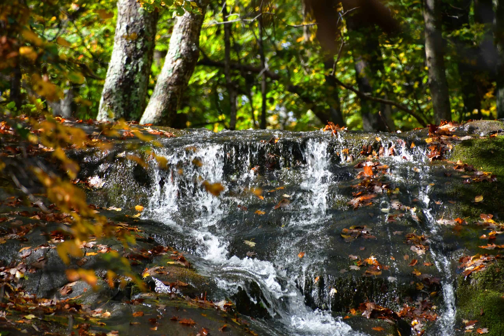
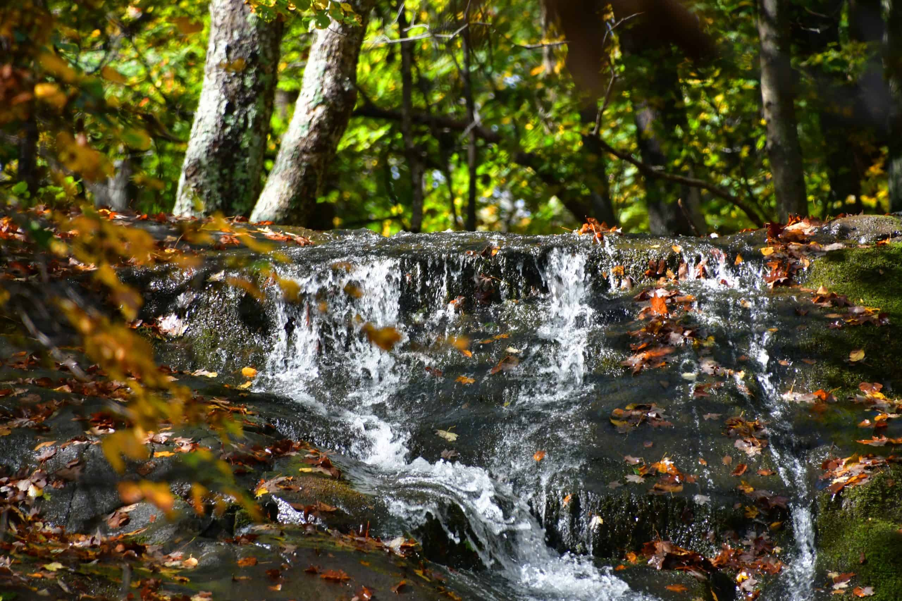
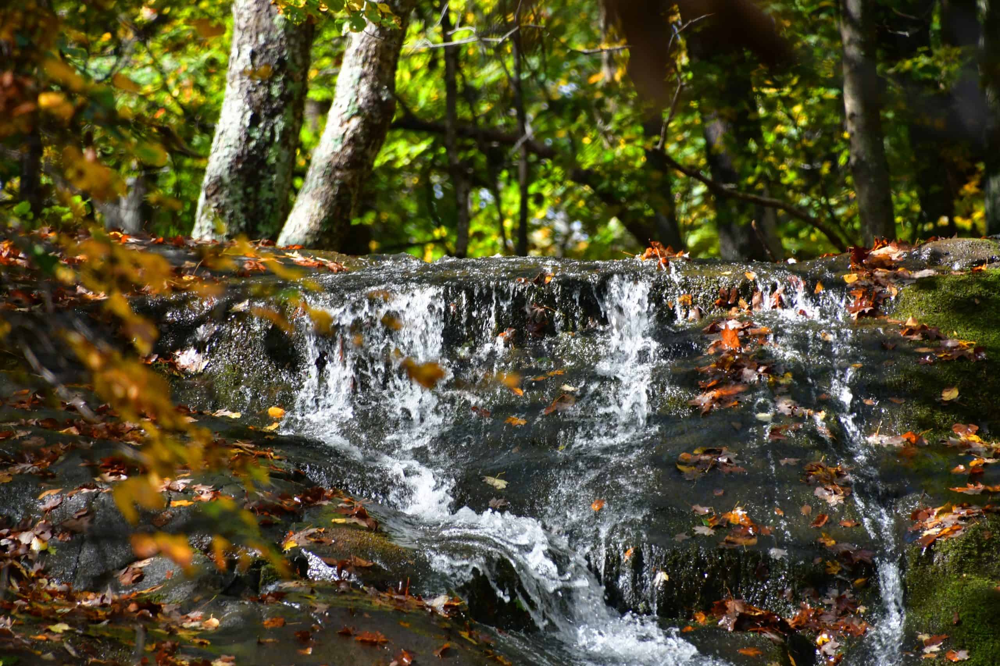

 
ການໄຫຼຂອງນໍ້າເທິງພື້ນຜິວ ແລະ ໜ້າດິນຈາກແຫຼ່ງຕົ້ນນໍ້າ ໃນພື້ນທີ່ອັນກວ້າງໃຫຍ່ທີ່ມີປະສິດທິພາບການຜະລິດຕໍ່ານີ້ ຄາດຄະເນວ່າກວມເອົາ 35% ຂອງການໄຫຼສະເລ່ຍຂອງແມ່ນໍ້າຂອງ,
ໃນຂະນະທີ່ 80% ຂອງປະລິມານນ້ຳ
ໄຫຼດັ່ງກ່າວແມ່ນຢູ່ໃນລະດູຝົນ.ແມ່ນ້ຳຂອງແມ່ນແມ່ນ້ຳສາຍຫຼັກ ເຊິ່ງໄຫຼຜ່ານປະເທດລາວແຕ່ເໜືອເຖິງໃຕ້ເປັນໄລຍະ 1,860 ກມ ລຽບຊາຍແດນລາວ-ໄທ
ສ່ວນໃຫຍ່. ດິນແດນລາວກວມເອົາປະມານ 25% ຂອງສາຍແມ່ນ້ຳ
ຂອງ ເຊິ່ງສະໜອງນ້ຳຈືດສະເລ່ຍ 270 ຕື້ແມັດກ້ອນຕໍ່ປີໃນທົ່ວປະເທດ. ແມ່ນ້ຳຂອງໃນລາວລວມມີ 39 ສາຂາ ແລະ ສາຂາ
ຍ່ອຍ. ນ້ຳເປັນຊັບພະຍາກອນທີ່ສຳຄັນຂອງປະເທດໃນວຽກງານຊົນລະປະທານ, ການຫາປາ, ການປູກຝັງ,
ການລ້ຽງສັດ, ແລະ ສະໜອງທ່າແຮງດ້ານພະລັງງານໄຟຟ້າ (ຄວາມສາມາດສະໜອງ
ລວມມີປະມານ 23,000 ເມກາວັດ) ທັງສະໜອງນ້ຳໃຊ້ໃນຕົວເມືອງ ແລະ ຊົນນະບົດ. ໃນປະລິມານ້ຳອັນມະຫາສານດັ່ງກ່າວ ການນຳໃຊ້ນ້ຳຂອງ
ປະເທດລາວມີພຽງແຕ່ປະມານ 5.7 ຕື້ແມັດ
ກ້ອນໃນແຕ່>ລະປີ. ເຊິ່ງສ່ວນໃຫຍ່ແມ່ນໃຊ້ໃນການກະສິກຳ (82%), ອຸດສາຫະກຳ (10%), ແລະ ສ່ວນທີ່ເຫຼືອແມ່ນນຳໃຊ້ໃນຄົວເຮືອນ.8ເຂດດິນບໍລິເວນນໍ້າກໍ່ຖືເປັນຊັບພະຍາກອນສິ່ງ
ແວດ
ລ້ອມທີ່ສຳຄັນໃນລາວ. ປະເທດລາວປະກອບມີ 30 ບຶງຫຼັກ ເຊິ່ງກວມເອົາພື້ນທີ່ລວມ 1 ລ້ານເຮັກຕາ. ໃນນັ້ນ, ບຶງຂຽດໂງ້ງແຂວງຈຳປາສັກ ແລະ ເຊຈຳພອນແຂວງສະຫວັນນະເຂດ ແມ່ນ 2 ບຶງທີ່
ຖືກກຳນົດໃຫ້ເປັນ ເຂດດິນ
ບໍລິເວນນໍ້າຣາມຊາ ທີ່ສຳຄັນໃນລະດັບສາກົນຂອງລາວ.
ປະເທດລາວເປັນປະເທດທີ່ມີພູມສັນຖານ ແລະ ລະບົບນິເວດທີ່ຫຼາກຫຼາຍ ພ້ອມທັງເປັນປະເທດທີ່ບໍ່ມີທາງອອກສູ່ທະເລ ແລະ ປົກຄຸມດ້ວຍປ່າໄມ້ທີ່ດົກໜາ
ພື້ນທີ່ 80% ເປັນພູ ຫຼື ສາຍພູ
ແລະ ອີກ 20% ເປັນພູພຽງ ແລະ ທົ່ງພຽງລ້ອງແມ່ນໍ້າຂອງ.

ຍ້ອນປະເທດລາວມີພູມສັນຖານສ່ວນໃຫຍ່ເປັນພູ ຈຶ່ງອຸດົມໄປດ້ວຍຊັບພະຍາກອນບໍ່ແຮ່. ບໍ່ແຮ່ທີ່ສຳຄັນທີ່ມີການຂຸດຄົ້ນມີ ບໍ່ທອງແດງ, ຄຳ, ເຫຼັກ ແລະ ເງິນ,
ນອກນັ້ນຍັງມີແຮ່ທາດທີ່ເປັນ
ສິນຄ້າເຊັ່ນ ຖ່ານຫີນ, ຫີນກາວ, ຊືນ, ໂປຕັສ໌, ພອຍ, ກົ່ວ ແລະ ສັງກະສີ2 ຂະແໜງການຂຸດຄົ້ນຫີນ ແລະ ບໍ່ແຮ່ມີຄວາມສຳຄັນ
ຕໍ່ການພັດທະນາພື້ນຖານໂຄງລ່າງ ແລະ ເສດຖະກິດດ້ວຍການ
ສະໜອງວັດຖຸດິບ ແລະ ສ້າງລາຍຮັບຈາກການລົງທຶນ, ອຸດສາຫະກຳດັ່ງກ່າວກວມເອົາປະມານ 10,500
ຕື້ກີບຂອງລວມຍອດຜະລິດຕະພັນພາຍໃນປີ 2017, ເພີ່ມຂຶ້ນ 7% ຈາກປີ 2013.